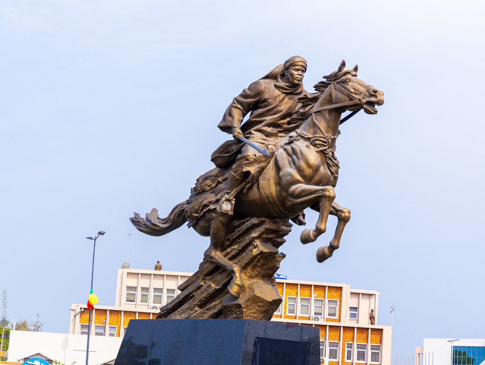
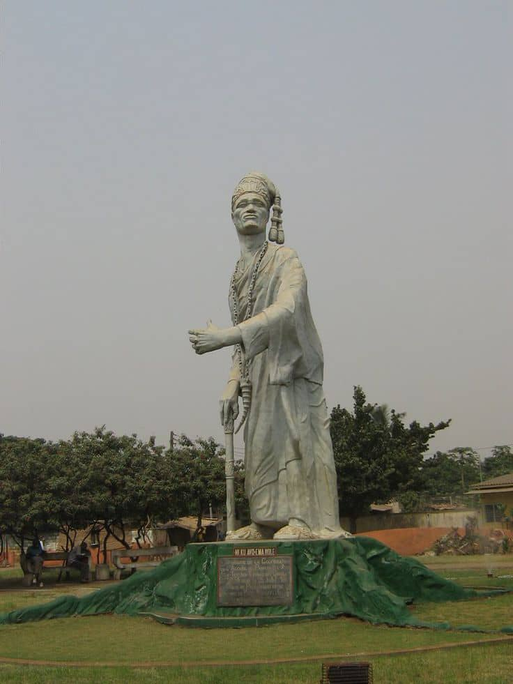
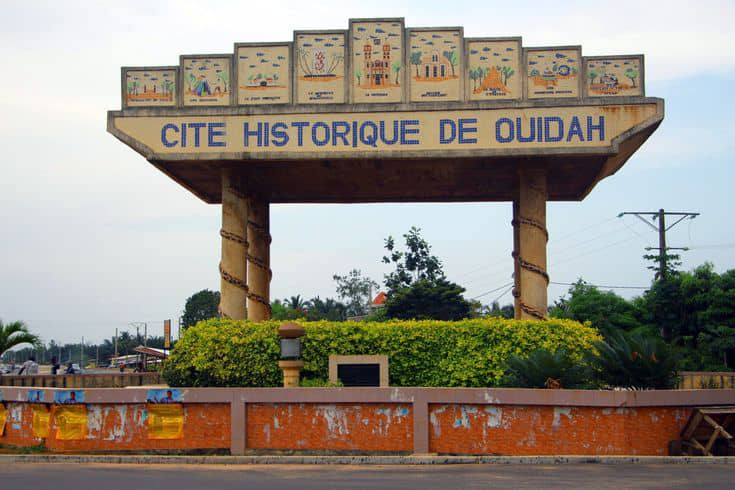
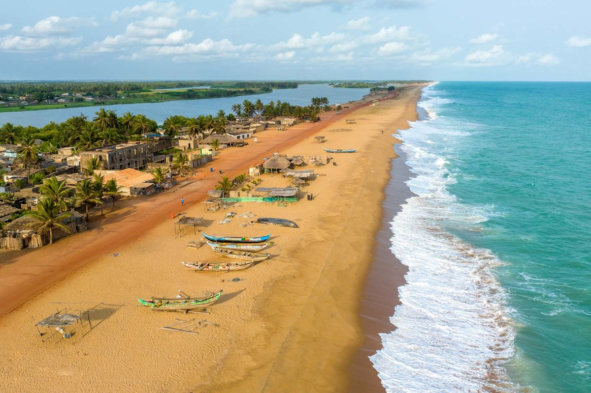
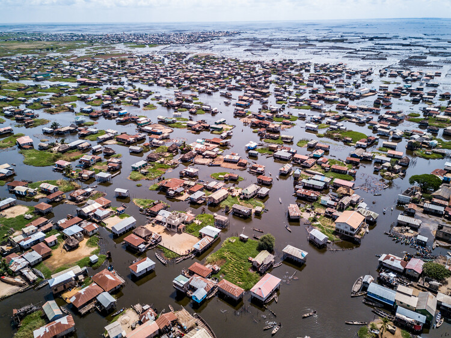

Réponse rapide
Nous revenons vers vous avec une première orientation claire.
VakponTour construit votre itinéraire au Bénin : cités lacustres, mémoire de Ouidah, plages de Grand-Popo, sur mesure du premier au dernier kilomètre.
Le Bénin ne se résume pas à une carte postale. C'est un pays historique posé sur une lagune, un port qui ne s'arrête jamais, une ville entière construite sur pilotis, et une côte qui garde la mémoire d'un continent.Entre traditions vivantes et modernité vibrante, VakponTour vous y emmène, à votre rythme, à travers des voyages sur mesure et exclusifs.

La ville qui ne dort jamais vraiment : marchés, art urbain, bord de mer.

La capitale historique, entre palais royaux et influences afro-brésiliennes.

Berceau du Vodun, terre de mémoire face à l'Atlantique.

Le Bénin qui ralentit, entre plages sauvages et embouchures tranquilles.

Un village entier posé sur l'eau, à la pirogue.
Quelques questions sur vos envies, votre budget et le temps dont vous disposez.
Circuits, hébergements et transports assemblés spécifiquement pour vous.
Un accompagnement local du premier jour au dernier.
Nous revenons vers vous avec une première orientation claire.
Chaque étape et chaque adresse sont sélectionnées sur le terrain.
Une équipe béninoise vous suit avant, pendant et après le séjour.
“Un itinéraire juste, fluide et profondément humain. Nous avons découvert le Bénin autrement.”
“Chaque accueil était chaleureux, chaque transfert simple. Une vraie tranquillité d’esprit.”
Des bases vivantes à adapter selon votre rythme, vos envies et votre budget.
Marchés, art, mémoire et océan pour une première rencontre intense avec le Bénin.
Partir de cette idéeUne boucle douce entre architecture, pirogues, rencontres et nuits choisies.
Partir de cette idéeUne immersion complète, avec du temps pour explorer sans courir d'une étape à l'autre.
Partir de cette idéeNous vous aidons à choisir selon la météo, les événements culturels et le rythme du séjour.
Oui. Durée, étapes, hébergements, activités et accompagnement sont ajustés avec vous.
Oui, nous pouvons prévoir l'accueil, les transferts, les guides locaux et les activités.